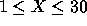
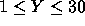
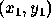
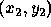
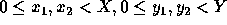
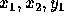
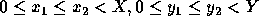
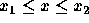
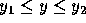

| Race Tracks |
Many boring math classes have been spent playing Race Tracks, where two players have to maneuver their cars on a race track drawn on a piece of paper, while their cars can only accelerate by a limited (positive or negative) amount per move.
A variant of Race Tracks involves Hoppers. Hoppers are people on a jump stick who can jump from one square to the other, without touching the squares in between (a bit like a knight in chess). Just like the aforementioned cars, they can pick up speed and make bigger hops, but their acceleration per move is limited, and they also have a maximum speed.
Let's be a bit more formal: our variant of Race Tracks is played on a rectangular grid, where each square on the grid is either empty or occupied. While hoppers can fly over any square, they can only land on empty squares. At any point in time, a hopper has a velocity (x,y), where x and y are the speed (in squares) parallel to the grid. Thus, a speed of (2,1) corresponds to a knight jump, (as does (-2,1) and 6 other speeds).
To determine the hops a hopper can make, we need to know how much speed he can pick up or lose: either -1, 0, or 1 square in both directions. Thus, while having speed (2,1), the hopper can change to speeds (1,0), (1,1), (1,2), (2,0), (2,1), (2,2), (3,0), (3,1) and (3,2). It is impossible for the hopper to obtain a velocity of 4 in either direction, so the x and y component will stay between -3 and 3 inclusive.
The goal of Hopping Race Tracks is to get from start to finish as quickly as possible (i.e. in the least number of hops), without landing on occupied squares. You are to write a program which, given a rectangular grid, a start point S, and a finish point F, determines the least number of hops in which you can get from S to F. The hopper starts with initial speed (0,0) and he does not care about his speed when he arrives at F.
The first line contains the number of test cases (N) your program has to process. Each test case consists of a first line containing the width X (  ) and height Y (  ) of the grid. Next is a line containing four integers separated by blanks, of which the first two indicate the start point  and the last two indicate the end point  (  ). The third line of each test case contains an integer P indicating the number of obstacles in the grid. Finally, the test case consists of P lines, each specifying an obstacle.
Each obstacle consists of four integers:  and , (  ), meaning that all squares (x,y) with  and  are occupied.
The start point will never be occupied.
The string 'No solution.' if there is no way the hopper can reach the finish point from the start point without hopping on an occupied square. Otherwise, the text 'Optimal solution takes N hops.', where N is the number of hops needed to get from start to finish point.
2 5 5 4 0 4 4 1 1 4 2 3 3 3 0 0 2 2 2 1 1 0 2 0 2 1 1
Optimal solution takes 7 hops. No solution.